ESC or click to close
This comprehensive land evaluation survey was carried out for IAR&T across the Ikere area of Oyo State to support agricultural planning for a proposed farmland. The study covered approximately 6,770 hectares sampled at a 700m grid spacing, yielding 139 georeferenced soil sample points.
The analysis characterized the soil's physical and chemical properties — nitrogen, phosphorus, potassium, organic carbon, calcium, soil depth, and texture — and translated these into practical land suitability assessments for three priority crops: maize, rice, and soybean. An erosion risk assessment and fertility capability classification were also produced.
All spatial interpolation was performed using Inverse Distance Weighting (IDW). IDW was preferred over kriging because it preserves actual measured values at sample locations without over-smoothing, faithfully representing the field reality. Kriging applies statistical smoothing that can mask localized nutrient variability which is agronomically critical for site-specific management decisions.
The geological and hydrological context of the study area — dominated by Migmatite with minor occurrences of Fine and Medium-grained Biotite granite, Silicified Sheared rocks, and undifferentiated Schist — directly influences soil parent material and therefore nutrient distribution across the landscape.
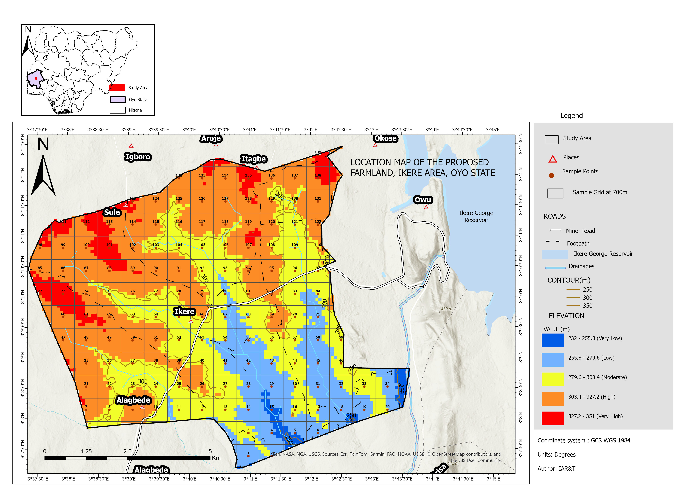
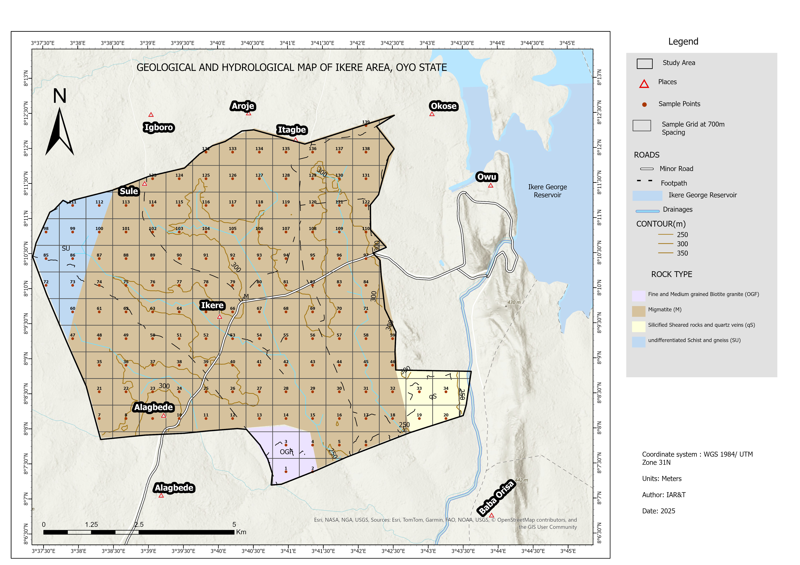
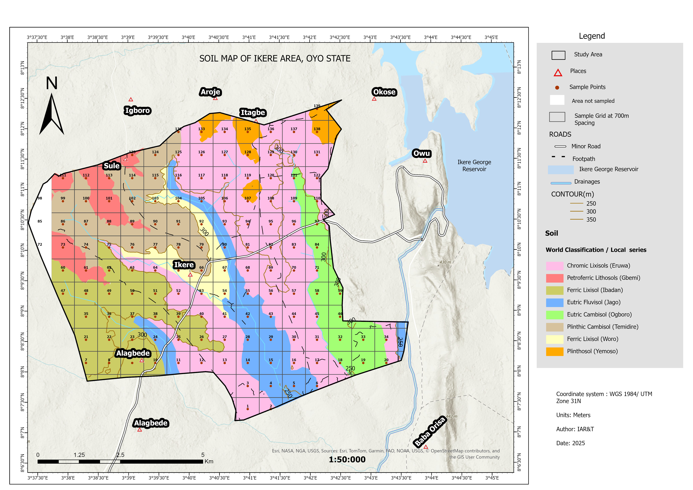
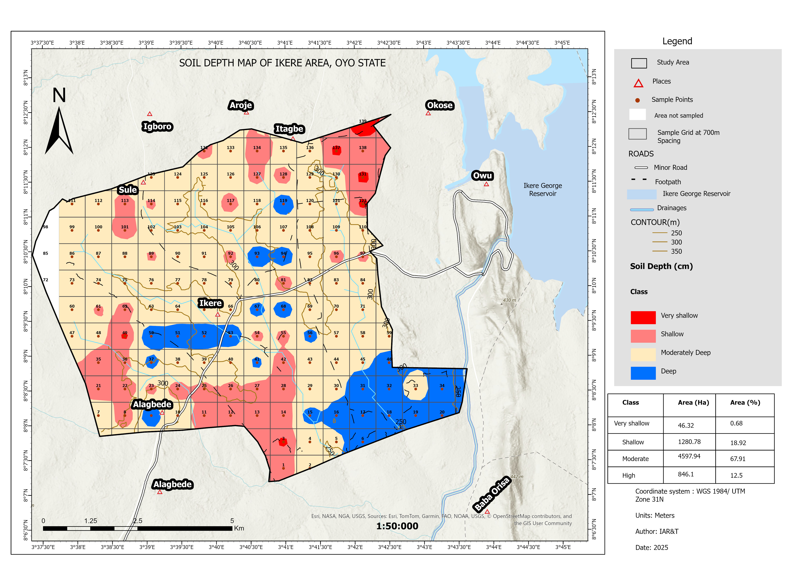
Five key soil chemical parameters were mapped using IDW interpolation. The results reveal a landscape largely adequate in organic carbon and nitrogen but significantly deficient in available phosphorus — a critical finding for fertilizer management planning.
IDW was selected because it honours actual measured values at sample points, making the interpolated surface directly traceable to field observations. Kriging applies a statistical model that smooths values between sample locations, which can mask localized nutrient hotspots and deficiency pockets that are exactly what agronomic management needs to detect. For soil nutrient mapping at this grid density, IDW produces a more faithful and actionable representation of spatial variability across the study area.
| Parameter | Dominant Class | Coverage | Agronomic Implication |
|---|---|---|---|
| Organic Carbon | High (>1.4%) | 98.11% | Good soil organic matter status across most of the area |
| Total Nitrogen | High (>0.20%) | 93.97% | Adequate nitrogen levels; localized deficiencies in 6% of area |
| Available Phosphorus | Low (3.0–7.0 mg/kg) | 76.79% | P deficiency widespread — phosphate fertilization recommended |
| Exchangeable Potassium | Moderate (0.30–0.60 cmol/kg) | 65.13% | Moderate K status; supplementation needed in 34% of area |
| Exchangeable Calcium | Moderate (5.19–8.41 cmol/kg) | 85% | Generally adequate; low Ca patches in western portions |
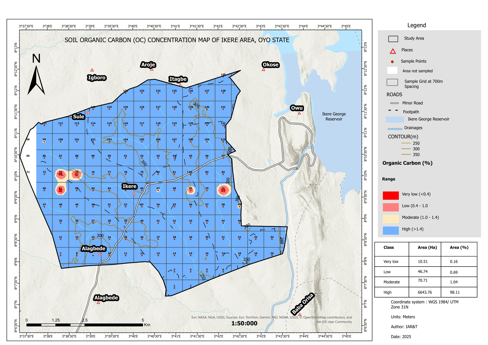
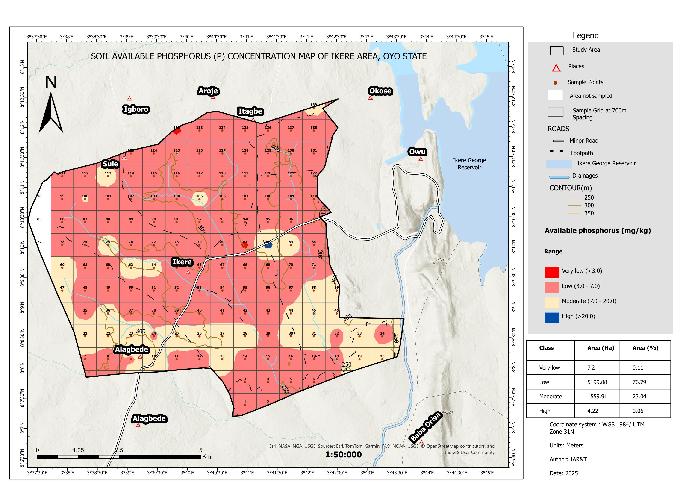
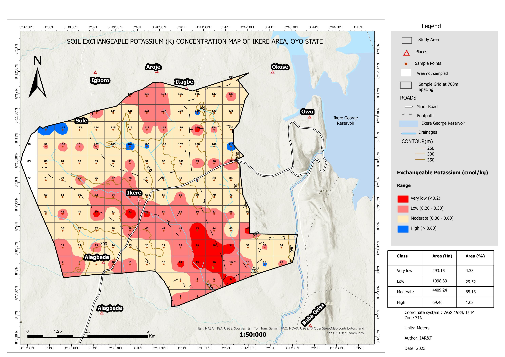
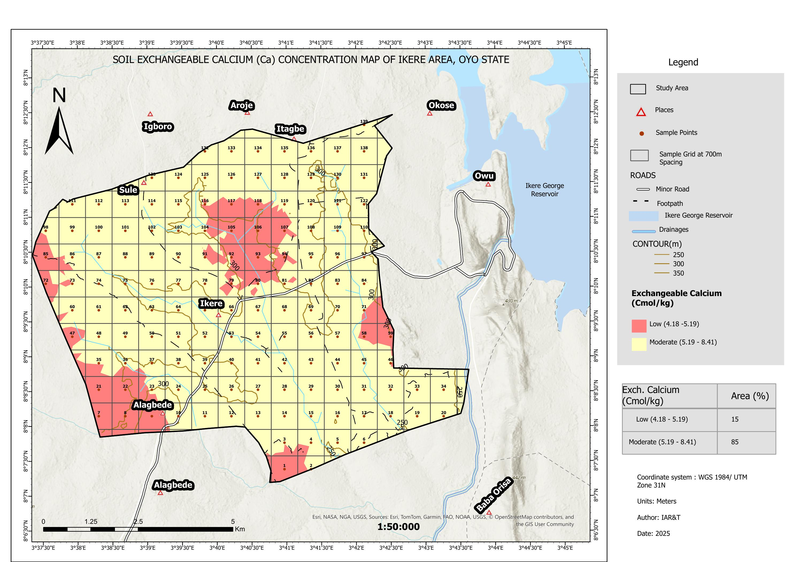
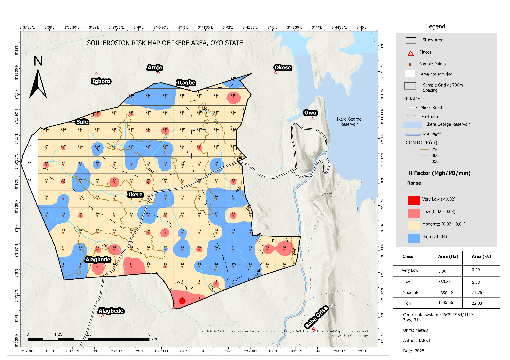
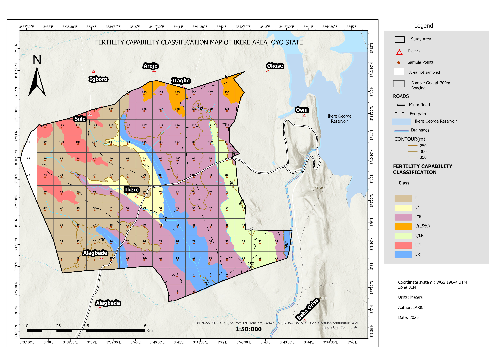
Using the FAO land suitability framework, soil physical and chemical properties were evaluated against the requirements of three priority crops. Suitability classes range from S1 (highly suitable) through S2 (moderately suitable with limitations) to S3 (marginally suitable) and N1 (not suitable due to wetness constraints).
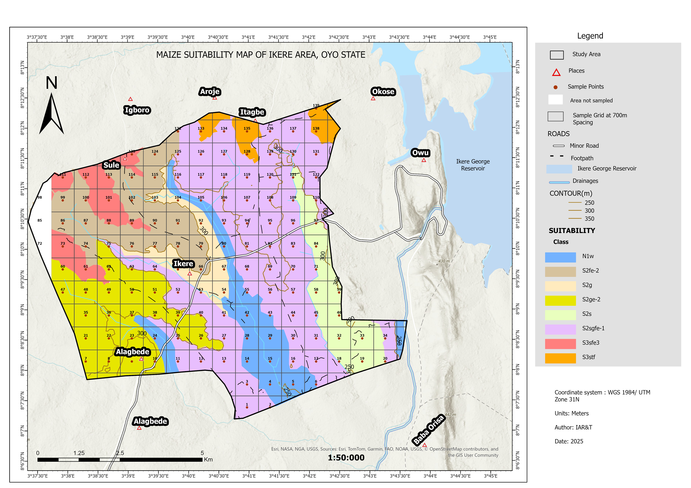
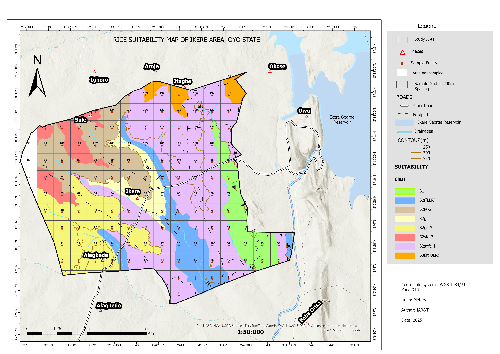
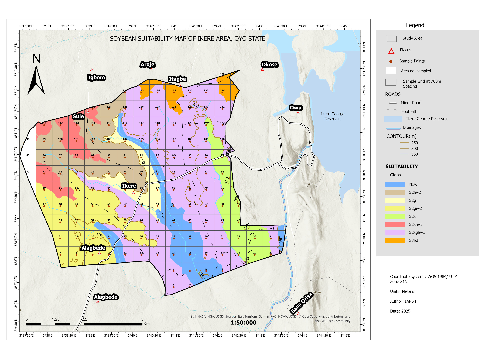
Sampling design: A systematic grid sampling design was adopted at 700m spacing across the study area, yielding 139 georeferenced sample points. This spacing was selected to capture spatial variability at a scale relevant to farm management unit decisions.
Interpolation: IDW was applied to all nutrient parameters. The method assigns weights inversely proportional to distance, ensuring that closer sample points have greater influence on interpolated values. This preserves actual field measurements at sample locations without imposing statistical model assumptions.
Suitability evaluation: Land suitability was assessed using the FAO framework, matching soil physical properties (depth, texture, drainage) and chemical properties (nutrient levels, pH) against published crop requirement tables for maize, rice, and soybean.
Erosion risk: The K factor (soil erodibility) was computed from soil texture and organic matter data, then mapped to identify areas requiring soil conservation measures. Fertility Capability Classification was applied using the FCC system to provide a management-oriented characterization of soil limitations.
Available phosphorus is critically low across 76.79% of the study area, making phosphate fertilization the single most impactful agronomic intervention for this farmland. Organic carbon and nitrogen are comparatively adequate, which is unusual and reflects the strong organic matter status of the soils.
Over a fifth of the study area — 1,545 hectares — falls in the High erosion risk class based on K factor analysis. These areas, concentrated in the steeper portions of the study area, require soil conservation measures before intensive cultivation begins.
The eastern corridor shows S1 (highly suitable) classification for rice, linked to the presence of Eutric Fluvisol (Jago series) soils associated with drainage channels. This spatial specificity demonstrates the value of detailed soil mapping over generic land assessment.
Migmatite dominates the geology of the study area, which is reflected in the predominantly Ferric and Chromic Lixisol soil types. The strong geological-soil relationship confirms that parent material is the primary control on spatial nutrient patterns — a finding that improves interpretability of the nutrient maps.